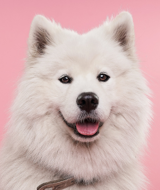
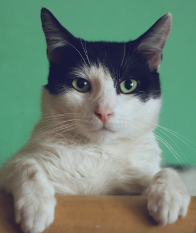
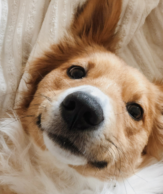
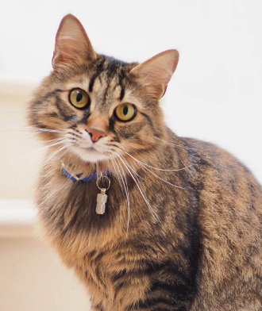

The most amazing list of adoptable pets at your fingertips. Updated fresh daily
Our center is located in beautiful Miami, and it's currently 84°F at our pet playground
Our center has over 70 volunteers who play with pets four times daily
For the last 5 years we've consistently been voted the #1 pet adoption center in the state
Every night our staff leads a yoga session and the animals are free to roam around and relax around people

Barksalot is a sweet and lovable 3 years old ball of fluff, He loves carrots, celery and playing fetch
2 Years old

Meowsalot is the most talkative cat we've ever came across. Constant meowing, chirping and purring
1 Year old

Woof is a very talkative and sweet pup, She loves beets, plums, cuddles and jumping over low fences
Less than a year old

Purrsloud has the loudest and most relaxing purr that's come through our center. Come hear it yourself
4 Years old